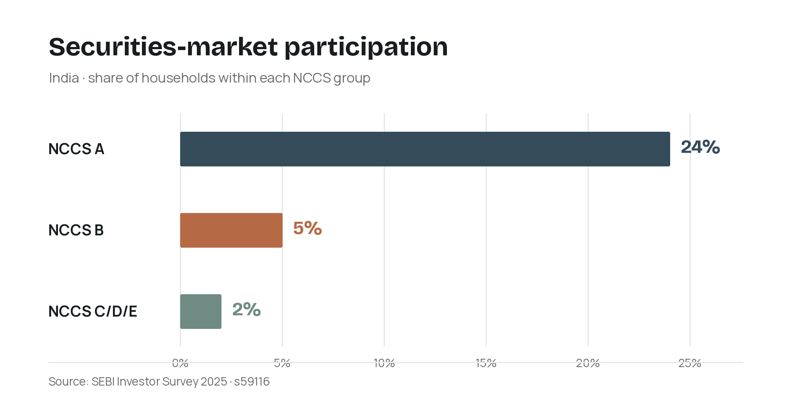

Key takeaways
Direct response. There is no evidence that tokenised shares are currently draining emerging-economy savings or measurably depriving local firms of capital. The official assessments reviewed still describe tokenisation as small, with limited use cases and unproven benefits [s57841] [s58280]. But “not observed” is not “impossible”: cheap, continuous access to foreign equities could weaken domestic equity demand, bank funding or monetary transmission if adoption becomes material and purchases are additional outflows rather than a change of venue.
The strongest case for access is portfolio diversification, not speculation or a promise of higher returns. The strongest objection is distributional: households with surplus income, financial knowledge and loss-absorbing buffers are best placed to benefit. A lower ticket size does not create either surplus or resilience.
Policy response. Democratise rights and outcomes, not merely exposure. Permit foreign diversification through regulated, diversified products with clear ownership, custody, fee, FX and redemption terms. Use the same infrastructure for domestic firms, infrastructure and public assets. Do not make unrestricted offshore wrappers the default mass-savings channel.
| Hypothesis | Verdict after review |
|---|---|
| H1: Tokenised shares will drain domestic savings and starve local firms. | Not established. A conditional transmission mechanism exists; token-specific economy-wide effects are unmeasured and currently implausible at the officially assessed scale. |
| H2: Tokenised shares will improve saver outcomes through access and diversification. | Potential, not demonstrated. Fractional access is useful; net returns, diversification, costs and liquidity outcomes for tokenised savers are not yet measured. |
| H3: Benefits will accrue mainly to richer households and platforms. | Plausible and better supported by adjacent evidence, but not directly measured. Existing participation and loss-absorption gradients point toward unequal gains. |
Context and problem
“Tokenised share” describes a representation and transfer mechanism, not one legal product. In an issuer-sponsored native structure, the issuer integrates the token into its shareholder record. In a custodial or wrapped structure, an intermediary holds shares and issues a claim whose voting, dividend, redemption and insolvency rights depend on the contract. A synthetic product may provide only price exposure through a derivative. US SEC staff explicitly distinguish these structures and their rights [s56627] [s56628] [s56623]. The investor question is therefore not “Is it on-chain?” but “What legally enforceable claim do I own, against whom?”
Scale claims require equal care. Private trackers variously report outstanding value, platform capitalisation, custody assets and turnover; they are not a common series. This brief therefore relies on the qualitative official finding of limited scale rather than adding incompatible estimates. It also excludes equity perpetuals, CFDs and synthetic tracker tokens from “shares” unless their legal exposure is separately identified.
Two accounting distinctions discipline the drain debate. First, household saving is income not consumed; moving an existing deposit into a foreign share is a portfolio reallocation, not automatically a fall in saving. Second, buying an existing foreign share pays its seller, not the issuing company. It finances a foreign firm directly only when the purchase funds new issuance. Domestic harm must instead travel through relative asset demand, market liquidity, the exchange rate, bank funding or reduced local issuance.
The testable chain is: tokenised access changes the marginal cost and convenience of foreign exposure; households fund purchases from particular domestic assets; net cross-border flows and prices respond; banks and local issuers adjust funding; real investment changes. Every arrow needs evidence. None should be assumed from trading volume alone.
Benefits for savings — and the household risks
The genuine benefit: a wider, divisible opportunity set
A household whose wages, home, pension and business prospects already depend on one economy may benefit from assets whose returns depend on other economies. Fractional units can let a small balance spread across several securities or a diversified fund rather than concentrate in one whole share. Evidence from conventional fractional trading supports an access effect: US research found increased ownership of higher-priced stocks after fractional trading, while ESMA reported substantial fractional-trading activity [s58092] [s58094]. These are fractional-trading results, not tokenised-saver outcome studies.
Tokenisation may also reduce some reconciliation and transfer frictions. Yet IOSCO finds secondary-market liquidity gains are not clearly evidenced, and the FSB says the value proposition is less clear where markets are already digitised and well governed [s57841] [s58523]. Continuous trading is not the same as continuous liquidity, and a new wrapper can add fees, spread, custody and redemption risk even when the visible ticket is smaller.
FX is a two-sided exposure
An unhedged foreign share combines equity risk with currency exposure. If the investor’s domestic currency depreciates against the asset currency, the foreign asset’s domestic-currency value generally rises; foreign-currency depreciation or domestic-currency appreciation can reduce it. Foreign shares can therefore hedge domestic depreciation, but they are not a one-way defence against loss. The correct household metric is total return after equity movements, FX, hedging cost, spreads, fees and tax—not the share price alone.
Access can intensify behavioural and intermediary risk
IOSCO links unadvised, digitally engaged self-directed trading with insufficient diversification and excessive risk-taking [s57840]. A polished app, fractional ticket and continuous market can encourage activity without improving suitability. Concentration in a few foreign mega-cap stocks is not global diversification; leverage and gamified prompts can reverse the benefit.
Two analogies identify dangers without proving token outcomes. India’s SEBI found that 93% of individual equity derivatives traders lost money over FY2022–FY2024 [s57845]. BIS research estimated substantial losses for many crypto-app users, with more losers in several emerging economies [s58089]. Derivatives and crypto are not regulated tokenised shares. Their lesson is narrower: easy digital access can scale harmful product design and weak loss capacity as efficiently as it scales access.
Who is positioned to gain?
Financial access has expanded, but investable surplus remains unequal. The World Bank reports that 75% of adults in low- and middle-income economies had an account in 2024 [s58260], while 40% of adults in developing economies saved formally [s57853]. Formal saving was reported by 28% of adults in the poorest 40% of households versus 47% in the wealthiest 60%; these household positions are self-reported within each economy [s58263].
India shows the securities-participation gradient clearly: 9.5% of households invest in securities-market products [s59049], with participation of 24% in NCCS A, 5% in NCCS B and 2% in NCCS C/D/E [s59116].

Figure 1. Securities-market participation rises sharply with socioeconomic position. Source: SEBI Investor Survey 2025 [s59116].
The likely first beneficiaries are consequently salaried, educated households with existing buffers, plus platforms earning spread, custody, FX or data-related revenues. Poorer households may value fractional access, but forcing a choice between precautionary savings and volatile foreign assets is not inclusion. No reviewed source measures tokenised-share ownership by income or wealth; this distributional conclusion is an inference from adjacent participation evidence.
Local capital formation and macroeconomic effects
What could bind—and what the evidence does not show
A material drain is most plausible where households are marginal buyers in a thin local equity market, banks depend on the deposits being moved, foreign-currency demand is already strong, and local firms actually seek outside equity. It is less plausible where few firms want to dilute ownership, bank credit rather than equity is the binding constraint, institutional investors dominate demand, or the same investors merely change trading venue.
No retrieved study traces tokenised access through household funding sources, deposit contraction, bank credit, local equity prices and new issuance. Nor does broader liberalisation evidence settle the question: capital-account opening and foreign inflows have different direction, scale and institutional conditions from retail outflows through tokens. Aggregate saving–investment correlations are not household home-bias measures and cannot close that gap.
The relevant domestic risk is therefore not an automatic transfer of “capital to foreign companies.” It is the possibility that a marginal exit raises local equity funding costs or changes bank funding enough to reduce creditworthy firms’ investment. Policymakers should measure that chain before claiming either damage or safety.
Speed changes the macro problem before it changes the exposure
A tokenised foreign share is still a foreign-currency equity exposure. What changes is the operating speed and the location of infrastructure risk. The IMF warns that tokenised assets and money can cross borders almost instantaneously, increasing risks of volatile flows, rapid currency substitution and weaker monetary sovereignty [s57285]. It also highlights the loss of settlement buffers, automated margin and redemption dynamics, platform concentration and code oversight [s57277] [s57282] [s57283].
Stablecoin evidence on currency substitution and spillovers is useful for designing monitoring, but it is not an estimated outflow elasticity for tokenised equities. The correct conclusion is transition risk: present macro effects may be small while future reversibility, intervention time and regulatory reach become harder.
Capital-flow measures are not a universal solution. IMF guidance permits targeted, transparent and temporary measures in specified circumstances, but they should not substitute for warranted macroeconomic adjustment [s56727] [s58072]. Outflow restrictions are principally crisis or imminent-crisis tools, and the 2022 review explicitly left aspects of digitalisation and outflow measures as research gaps [s58314] [s58075]. Offshore venues and self-custody also limit enforceability.
Options for democratisation
| Option | Benefit | Cost and risk | Capacity and judgement |
|---|---|---|---|
| 1. Unrestricted offshore access | Widest choice; lowest visible entry barrier. | Weak title, redemption and redress; platform and FX risk; easiest route to offshore regulatory arbitrage. | Low administrative burden but high supervisory reach required. Reject as the default for mass savings. |
| 2. Regulated diversified foreign access | Licensed distribution, authorised diversified products, suitability, clear custody and disclosure; can offer hedged classes. | Authorisation and supervision costs; wrapper concentration; herding; product may be conventional rather than genuinely token-native. | Moderate: extend existing fund, custody and conduct rules. Preferred foreign-access channel. Hong Kong’s framework illustrates prospectus, intermediary and suitability safeguards [s58383] [s58381]. |
| 3. Domestic issuance and public-asset rails | Smaller tickets for local firms, bonds and infrastructure; registry and settlement improvements; retains two-way investor choice. | Venue, legal and market-making costs; thin liquidity; SME credit risk could be mis-sold as safe saving. | High legal and supervisory demands. Pursue in parallel. Nigeria has approved a regulated route, India has piloted tokenised bonds under existing law, and Kenya is developing its exchange infrastructure [s57915] [s57927] [s57920]. |
| 4. Capped, time-limited pilot | Bounded experiment with explicit evidence thresholds and a decision date. | Supervisory staffing; low uptake; artificial caps; expiry without a decision. | Low to moderate. Best governance route where law is unsettled. ESMA’s pilot review shows why interoperability, central-bank-money access and workable thresholds matter [s56695] [s56687]. |
These options are not mutually exclusive. The strongest package is Option 4 as the process, Option 2 for foreign allocation and Option 3 for domestic capital formation. Option 1 should not be legitimised merely because prohibition is difficult to enforce.
Implementation considerations
- Classify the claim before approving the product. Record shareholder status, voting and dividends, redemption, bankruptcy treatment, transfer restrictions, custodian control and settlement finality. A price-exposure token must not be marketed as a share.
- Use technology-neutral conduct rules with technology-specific controls. Apply prospectus, custody, suitability and market-abuse rules; add smart-contract assurance, oracle governance, cyber resilience, key recovery and incident reporting. IOSCO’s “same activities, same risks, same regulatory outcomes” principle is the starting point [s58545].
- Make diversified products the easy route. Require clear risk and total-cost disclosure; assess suitability for complex products; prohibit leverage and manipulative engagement in the mass-savings channel. Do not prescribe one asset allocation for every household.
- Measure sources and uses of funds. Supervisors should collect investor residence, income band, funding asset, leverage, currency, hedge status, issuer proceeds and redemption data. Separate primary issuance from secondary turnover and new foreign exposure from a change of venue.
- Test saver and national outcomes. Publish net returns after fees, FX and tax; diversification; drawdowns; failed redemptions; complaints; new-entrant losses; domestic issuance; bank funding and credit. Pre-specify caps, review dates and stop conditions rather than using adoption as the success metric.
- Build domestic supply and regulated settlement. Recognise native records in law, support interoperable registries and market-making, and settle in well-regulated money. Tax each structure consistently and avoid arbitrary advantages over conventional securities [s58326].
- Coordinate before scale. Share issuer, custody, flow and incident information across securities, payments, banking and foreign-exchange authorities and across borders [s58612]. Begin with existing supervisory-capacity tools rather than waiting for a specialist digital-asset unit [s58616].
Risks across options
| Risk | Mitigation | Residual risk to monitor |
|---|---|---|
| Wrapper, custody or platform failure | Segregated assets, enforceable client rights, independent custody assurance, redemption testing and resolution plans. | Insolvency treatment and cross-border recovery remain untested for many structures. |
| Equity and FX losses | Total-return disclosure, optional hedged classes, suitability and diversified defaults. | Hedge cost and basis can erode protection; no allocation eliminates loss. |
| Fragmented or illiquid markets | Interoperability, market-maker obligations where feasible, transparent trading and redemption rules. | A 24/7 interface cannot guarantee a 24/7 buyer. |
| Regressive participation and mis-selling | Household buffers before risk assets, no leverage or gamification, income-band outcome reporting and effective redress. | Distribution data are presently absent; analogues may understate new risks. |
| Rapid outflows and monetary leakage | Residence- and currency-level monitoring, macroprudential tools and IMF-consistent, targeted temporary measures where justified. | Offshore venues and self-custody weaken enforcement; controls can displace rather than remove risk. |
| Domestic issuance fails to materialise | Legal recognition, issuer onboarding, interoperable settlement and local market-making. | Tokenisation cannot fix weak governance, low issuer demand or unbankable projects. |
Scope and method
This brief covers native tokenised shares, backed or wrapped claims and synthetic exposure, with regulated tokens as the policy focus. Fractional brokers, equity perpetuals, CFDs, stablecoins, crypto and conventional capital flows appear only as labelled analogies. Emerging economies are treated globally; India supplies the clearest official distribution chart, not a universal estimate. Evidence is current to 17 November 2026, with older work used only for durable mechanisms.
The central limitation is decisive: no source measures the full chain from tokenised access to household savings, domestic credit and firm issuance, or token holdings by income and wealth. Market-size estimates from incompatible trackers were not combined. An independent review corrected an inverted FX statement, removed saving–investment correlations as home-bias evidence and separated fractional-trading evidence from tokenised outcomes.
Comparison with the earlier GPT version. The core hypothesis is not materially different: both reject a demonstrated current drain and recognise diversification potential. This brief is narrower and more sceptical about benefits. It treats FX as two-sided exposure, distinguishes legal claims, makes distribution and platform capture central, and restricts capital-flow intervention to defined macro conditions. The earlier draft is a useful hypothesis statement; it is not independent evidence for its own conclusions.
Source register
- s57841, s58545, s57840 — IOSCO, Tokenization of Financial Assets, 2025. Official report.
- s58280, s58523, s58612 — Financial Stability Board, The Financial Stability Implications of Tokenisation, October 2024. Official report.
- s56627, s56628, s56623 — US SEC staff, Statement on Tokenized Securities, 30 January 2026. Official statement.
- s58092, s58094 — Better Finance, research on fractional trading and neobrokers, 2024. Research organisation. Used only for conventional fractional access.
- s57845 — Securities and Exchange Board of India, updated equity F&O loss study, 23 September 2024. Official release. Used only as a derivatives analogy.
- s58089 — Bank for International Settlements, Crypto shocks and retail losses, February 2023. Official bulletin. Used only as a crypto analogy.
- s58260, s57853, s58263 — World Bank, Global Findex Database 2025. Official report hub.
- s59049, s59116 — Securities and Exchange Board of India, Investor Survey 2025, published January 2026. Official survey.
- s57285, s57277, s57282, s57283 — IMF, Tokenization Can Change the World’s Financial Architecture, 2 July 2026. Official analysis.
- s56727 — IMF, The Institutional View on the Liberalization and Management of Capital Flows. Official topic page.
- s58072, s58075 — IMF, Review of the Institutional View, 2022. Official review.
- s58314 — IMF, Guidance Note on the Liberalization and Management of Capital Flows, 2023. Official guidance.
- s58383, s58381 — Hong Kong SFC framework, summarised by the Crypto Council for Innovation. Policy analysis. Secondary source; used for design illustration.
- s57915 — Ecofin Agency, Nigeria’s NASD tokenised-securities approval, August 2026. Report. Planned implementation is not treated as an outcome.
- s57927 — Caalley, India’s Demat 2.0 tokenised-bond pilot, September 2026. Trade-press report.
- s57920 — Spencer West, Kenya’s capital-market tokenisation framework, January 2026. Legal analysis.
- s56695 — ESMA, proposed amendments to make the DLT Pilot Regime permanent, June 2025. Official release.
- s56687 — Goodwin, analysis of ESMA’s DLT Pilot Regime review, July 2025. Legal analysis. Secondary source.
- s58326 — Andersen, legal and tax treatment of tokenised equity structures, November 2026. Tax analysis. Secondary source; tax treatment remains jurisdiction-specific.
- s58616 — IOSCO, supervisory training and MASI capacity tool. Official resource.